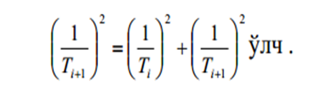
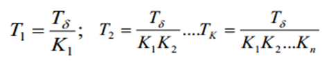
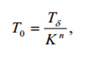
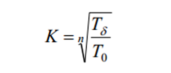
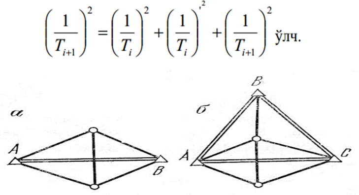
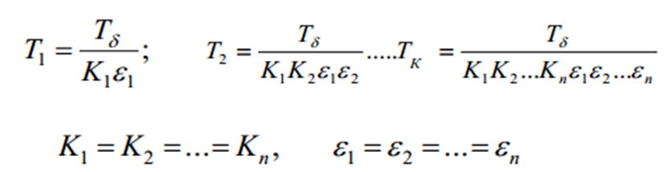
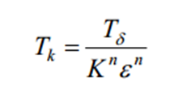

4-амалий иш Мавзу: Тармоқлар аниқлигини ҳисоблаш усуллари ва уларни барпо этиш поғоналари
Инженер-геодезик тармоқлар мақсадга мувофиқ, иш юритишнинг энг қулай қоидалари сақланган
ҳолда тузилиши керак. Шу ўринда иккита
сакланган хол
масаладан биттаси ечилиши мумкин: берилган куч, восита ва вақтни сарфлаб юқори аниқликдаги
тармоққа эришиш ва кам маблағ сарфлаб берилган
аниқликдаги тармоқни барпо қилиш.
Бу иккита ўзаро боғлиқ масалалар техникавий характеристикани ёки
иқтисодий самарадорликни оширишга олиб келади.
Инженер-геодезик тармоқлар бир нечта синф ва разрядлардан иборат, бўлиб,
босқичма-босқич
тузилади. Асосий мақсад имкон борича кам босқичли геодезик асос барпо этишга ҳаракат
қилинади.
Ҳисоблар учун дастлабки хатолар сифатида охирги босқични тузиш нисбий ҳатолиги қийматини
(1:T0) ва бошланғич нисбий хатолиги (1:Tb)
қабул қилинади.
Олдинги і босқич тармоғининг (26.1-а-расм) АВ томони асос қилиб
олинган бўлиб, 1/Ti нисбий хатоликка тенг дейлик.
У ҳолда кейинги i+1 босқич учбурчак томонларининг нисбий
хатолигини қуйидаги ифода орқали ҳисоблаш мумкин:

Олдинги босқичдан кейинги босқичга ўтишдаги аниқликни таъминлаш коэффициенти к билан
белгиланса, оралиқ босқичлар асос тармоқларини барпо қилиш қуйидагича ифодаланиши мумкин:

Агарда K1=K2=K3=...=Kn, бўлса,

бундан босқичлар сонини ҳисоблаш формуласини келтириб чиқариш мумкин.

Аммо, амалда ABC учбурчак бурчакларининг хатолигини эътиборга
олсак натижада

1- расм. Тармоқлар аниқлигини ҳисоблашга оид.
Дастлабки хатоликда қўшимча хатоликнинг мавжудлиги ифодада €
коэффициентини вужудга келтиради.
€, ни ҳисобга олган ҳолда

десак,

ифодадан кўриниб турибдики, босқичлар сонининг ортиб бориши,
охирги натижалар аниқлигини камайиб кетишига олиб келади.